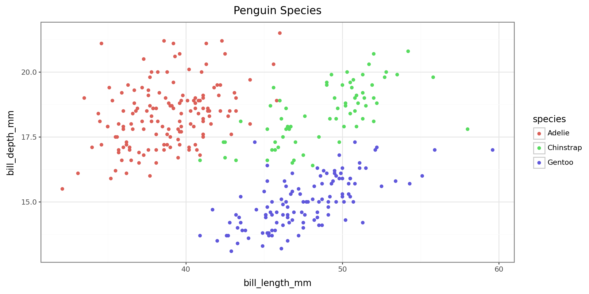
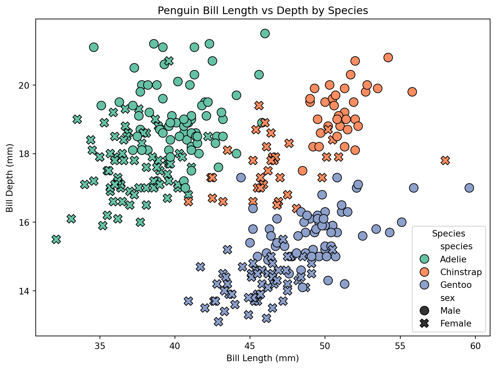
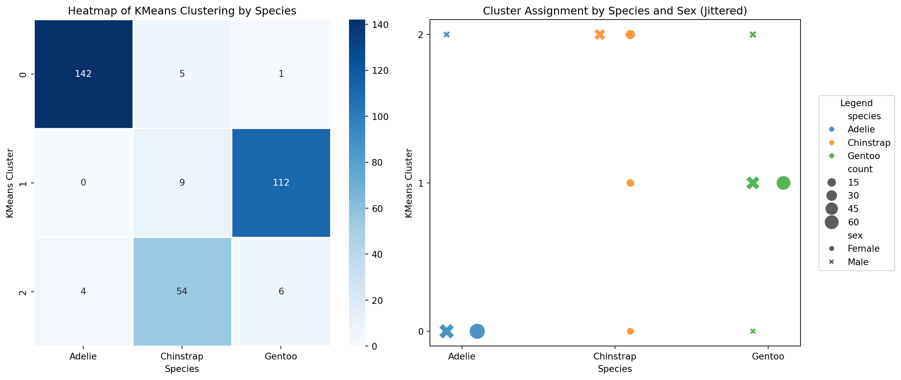
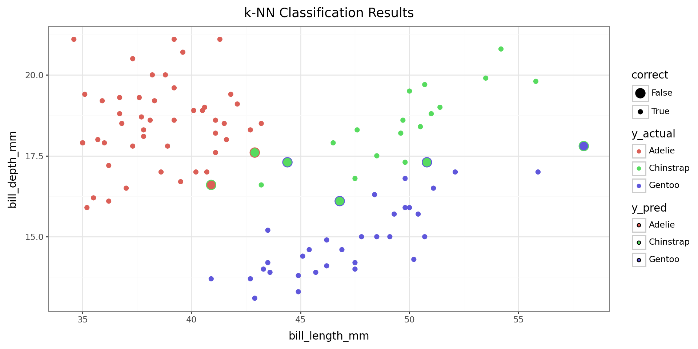
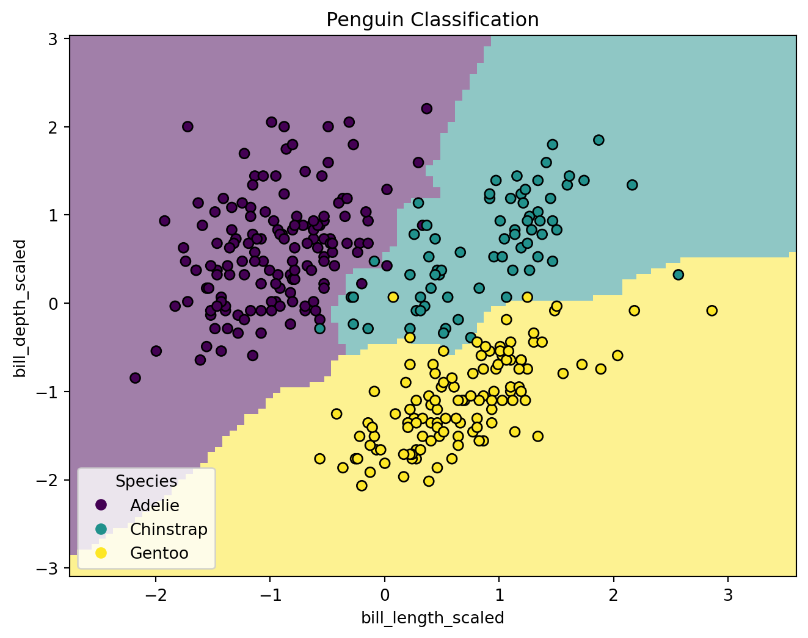

In this session, we’ll explore how Python’s object-oriented nature affects our modeling workflows.
Topics:
Python’s broader ecosystem makes it the go-to language in domains like AI, bioinformatics, data engineering, and computational biology.
Note: Packages like
rpy2andreticulatemake it possible to use both R and Python in the same project, but those are beyond the scope of this course.
A primer onreticulateis available here: https://www.r-bloggers.com/2022/04/getting-started-with-python-using-r-and-reticulate/
In the first session, we talked briefly about functional vs object-oriented programming:
Functional programming: focuses on functions as the primary unit of code
Object-oriented programming: uses objects with attached attributes(data) and methods(behaviors)
R leans heavily on the functional paradigm — you pass data into functions and get back results, in most cases without altering the original data. Functions and pipes (%>%) dominate most workflows.
In Python, everything is an object, even basic things like lists, strings, and dataframes, and a lot of ‘functions’ are written as object-associated methods. Some of these methods modify the objects in-place by altering the attached data (attributes). Understanding how this works is key to using Python effectively!
You’ve already seen this object-oriented style in Sessions 2 and 3 — you create objects like lists or dataframes, then call methods on them like
.append()or.sort_values(). In python, instead of piping, we sometimes chain methods together.
Python absolutely uses functions—just like R! They’re helpful for data transformation, wrangling, and automation tasks like looping and parallelization.
But when it comes to modeling, libraries are designed around classes: blueprints for creating objects that store data (attributes) and define behaviors (methods).
scikit-learn is great for getting started—everything from regression to clustering follows a simple, consistent OOP interface. Its API is also consistant with other python modeling packages, like xgboost for gradient boosting and scvi-tools for transcriptomics data.PyTorch and TensorFlow are essential if you go deeper into neural networks or custom models—you’ll define your own model classes with attributes and methods, but the basic structure is similar to scikit-learn.statsmodels is an alternative to scikit-learn for statistical analyses and has R-like syntax and outputs. It’s a bit more complex than scikit-learn and a bit less consistant with other packages in the python ecosystem.💡 To work effectively in Python, especially for tasks involving modeling or model training, it helps to think in terms of objects and classes, not just functions.
In Python modeling frameworks:
.fit(), .predict(), .score()
This makes model behavior consistent and helps manage complexity of things like pipelines that are designed to work for multiple model classes. It also simplifies creating/using pre-trained models: both the architecture and learned weights are bundled into a single object with built-in methods like .predict() or .fine_tune().
If you’re used tolm()orglm()in R returning a list of values, think of the Python approach as a self-contained object with named methods and stored results. Instead of having a separate results object, like in R, you would retrieve your results by accessing an attribute that is stored in the model object itself.
We’ll focus on scikit-learn here for the sake of simplicity, but feel free to explore other libraries!
https://wesmckinney.com/book/modeling is a good tutorial for statsmodels.
In OOP, code is structured around objects (as opposed to functions). This paradigm builds off the following principles:
StandardScaler object stores mean and variance data and has .fit() and .transform() methodssklearn.LinearRegression inherits attributes and methods from a general regression model class..fit() works the same way from the outside, regardless of model complexityWe won’t cover pipelines here, but they are worth looking into!
.fit(), .predict()
👉 To check if an object is an instance of a particular class, use:
Knowing what class an object belongs to helps us understand what methods and attributes it provides.
A base class (or parent class) serves as a template for creating objects. Other classes can inherit from it to reuse its properties and methods.
Classes are defined using the class keyword, and their structure is specified using an __init__() method for initialization.
For example, we can define a class called Dog and give it attributes that store data about a given dog.
We can also add methods that represent behaviors an object of the Dog class can perform:
class Dog: ## begin class definition
def __init__(self, name, breed): ## define init method
self.name = name ## add attributes
self.breed = breed
def speak(self): ## add methods
return f"{self.name} says woof!"
def __str__(self): ## add special methods, __str__(self) tells python what to display when an object is printed
return f"Our dog {self.name}"
def __repr__(self): ## add representation to display when dog is called in console
return f"Dog(name={self.name!r}, breed={self.breed!r})"Creating an instance (object) of the Dog class lets us model a particular dog:
Dog(name='Buddy', breed='Golden Retriever')Here, buddy is an object of the Dog class.
It has attributes (name, breed) and methods (speak()).
When we make an instance of the Dog class:
- We set the value of the attributes [name and breed], which are then stored as part of the buddy object
- We can use any methods defined in the Dog class on buddy
Our dog Buddy is a Golden Retriever.
Buddy says woof!Note: For python methods, the self argument is assumed to be passed and therefore we do not put anything in the parentheses when calling .speak().
Derived/child classes build on base classes using the principle of inheritence.
Now that we have a Dog class, we can build on it to create a specialized GuardDog class.
class GuardDog(Dog): # GuardDog inherits from Dog
def __init__(self, name, breed, training_level): ## in addition to name and breed, we can
# define a training level.
# Call the parent (Dog) class's __init__ method
super().__init__(name, breed)
self.training_level = training_level # New attribute for GuardDog that stores the
# training level for the dog
def guard(self): ## checks if the training level is > 5 and if not says train more
if self.training_level > 5:
return f"{self.name} is guarding the house!"
else:
return f"{self.name} needs more training before guarding."
def train(self): ## modifies the training_level attribute to increase the dog's training level
self.training_level = self.training_level + 1
return f"Training {self.name}. {self.name}'s training level is now {self.training_level}"
# Creating an instance of GuardDog
rex = GuardDog("Rex", "German Shepherd", training_level= 5)Now that we have a dog (rex), we can call on any of the methods/attributes introduced in the Dog class as well as the new GuardDog class.
Rex says woof!Dog(name='Rex', breed='German Shepherd')Rex's training level is 5.
Rex needs more training before guarding.This is the power of inheritance—we don’t have to rewrite everything from scratch!
Unlike standalone functions, methods in Python often update objects in-place—meaning they modify the object itself rather than returning a new one.
Training Rex. Rex's training level is now 6As we saw with Rex, child classes inherit all attributes (.name and .breed) and methods (.speak() __repr__()) from parent classes. They can also have new methods (.train()).
A mixin is a special kind of class designed to add functionality to another class. Unlike base classes, mixins aren’t used alone.
For example, scikit-learn uses mixins like:
- sklearn.base.ClassifierMixin (adds classifier-specific methods)
- sklearn.base.RegressorMixin (adds regression-specific methods)
which it adds to the BaseEstimator class to add functionality.
To finish up our dog example, we are going to define a mixin class that adds a functionality to the base Dog() class which allows us to teach a dog tricks.
.tricks, which stores the set of learned tricksclass TrickMixin: ## mixin that will let us teach a dog tricks
def __init__(self, *args, **kwargs):
super().__init__(*args, **kwargs) # Ensures proper initialization in multiple inheritance
self.tricks = [] # Store learned tricks
def learn_trick(self, trick):
"""Teaches the dog a new trick."""
if trick not in self.tricks:
self.tricks.append(trick)
return f"{self.name} learned a new trick: {trick}!"
return f"{self.name} already knows {trick}!"
def perform_tricks(self):
"""Returns a list of tricks the dog knows."""
if self.tricks:
return f"{self.name} can perform: {', '.join(self.tricks)}."
return f"{self.name} hasn't learned any tricks yet."
## note: the TrickMixin class is not a standalone class! it does not let us create a dog on its own!!!Using this Trick mixin, we can then create a new class of dog (SmartDog) using both Dogand TrickMixin as base classes.
By including both Dog and TrickMixin as base classes, we can give objects of class SmartDog the ability to speak and learn tricks!
Buddy learned a new trick: Sit!
Buddy learned a new trick: Roll Over!
Buddy already knows Sit!“If it quacks like a duck and walks like a duck, it’s a duck.”
Python doesn’t require explicit interfaces. If an object implements the expected methods, it can be used interchangeably with other objects. This is called duck typing.
We can demonstrate this by defining two new base classes that are different than Dog but also have a speak() method.
Even though Dog, Human and Parrot are entirely different classes…
Fido says woof!
Alice says hello!
Polly says squawk!They all implement .speak(), so Python treats them the same!
In the context of our work, this would allow us to make a pipeline using models from different libraries that do not share a base class/mixin but have the same methods.
While our dog example was very simple, this is the same way that model classes work in python.
Machine learning models in Python are implemented as classes.
- When you create a model, you’re instantiating an object of a predefined class (e.g., LogisticRegression()).
- That model inherits attributes (parameters, coefficients) and methods (like .fit() and .predict()).
For example, a logistic regression model in scikit-learn is an instance of the LogisticRegression class:
## Example:
from sklearn.linear_model import LogisticRegression
model = LogisticRegression() # Creating an instance of the LogisticRegression class
model.fit(X_train, y_train) # Calling a method to train the model
predictions = model.predict(X_test) # Calling a method to make predictionsHere, model is an object that has inherited attributes and methods from LogisticRegression.
.fit() should work as expected, regardless of complexity of underlying implimentation..fit(), .predict()), making them easy to use interchangeably, particularly in analysis pipelines.Understanding base classes and mixins is especially important when working with deep learning frameworks like PyTorch and TensorFlow, as they allow for easy customization of models.
By using object-oriented programming, Python makes it easy to structure machine learning workflows in a reusable and scalable way. The fact that all ML models in scikit-learn follow the same structure (with .fit(), .predict(), .score(), etc.) makes it easier to switch between models and automate processes. Additionally, the model classes in the statsmodels package have many of the same methods (.fit(), .predict(), .score()).
Apply knowledge of OOP to modeling using scikit-learn
Now that you understand classes and data structures in Python, let’s apply that knowledge!
In this project, we’ll try to classify penguin species using two features:
- bill_length_mm
- bill_depth_mm
We’ll explore:
- Unsupervised learning with K-Means clustering (model doesn’t ‘know’ y) - Supervised learning with a k-NN classifier (model trained w/ y information)
We’ll use models from scikit-learn, which are built using object-oriented design.
Each model is an instance of a class (inheriting from BaseEstimator) with:
Common Methods:
- .fit() — Train the model
- .predict() — Make predictions
Common Attributes:
- .get_params(), .classes_, .n_clusters_, etc.
We’re using
scikit-learnhere for its simplicity, but the concepts apply to more advanced frameworks like PyTorch and TensorFlow too!
Step 0: Prepare Workspace
- Import necessary libraries/modules:
- Functions (e.g., train_test_split, accuracy_score)
- Classes (e.g., KMeans, KNeighborsClassifier)
Step 1: Data Preparation
- Load data (pandas)
- Clean data (pandas, numpy)
- Transform/scale features (sklearn.preprocessing)
- Optionally split data into training and testing sets
Step 2: Initialize the Model
- Create an instance of the model class (KMeans, KNeighborsClassifier)
- Set parameters during instantiation (e.g., n_clusters=3, n_neighbors=5)
Step 3: Fit the Model
- Use .fit(X) for unsupervised models
- Use .fit(X_train, y_train) for supervised models
Step 4: Make Predictions (optional)
- Use .predict(X_test) to generate predictions
- Use .predict_proba() to get class probabilities (if available)
Step 5: Evaluate Model Performance
- Compare predictions to true values
- Use visualizations or metrics (e.g., accuracy, ARI, classification report)
Before any analysis, we must import the necessary libraries.
For large libraries like scikit-learn, PyTorch, or TensorFlow, we usually do not import the entire package. Instead, we selectively import the classes and functions we need.
🔤 Naming Tip:
-CamelCase= Classes
-snake_case= Functions
In this project, we’ll use the following:
Classes
- StandardScaler — for feature scaling
- KNeighborsClassifier — for supervised k-NN classification
- KMeans — for unsupervised clustering
Functions
- train_test_split() — to split data into training and test sets
- accuracy_score() — to evaluate classification accuracy
- classification_report() — to print precision, recall, F1 (balance of precision and recall), Support (number of true instances per class) - adjusted_rand_score() — to evaluate clustering performance
## imports
import pandas as pd
import numpy as np
from plotnine import *
import seaborn as sns
import matplotlib.pyplot as plt
from great_tables import GT
## sklearn imports
## import classes
from sklearn.preprocessing import StandardScaler
from sklearn.neighbors import KNeighborsClassifier
from sklearn.cluster import KMeans
## import functions
from sklearn.model_selection import train_test_split
from sklearn.metrics import accuracy_score, classification_report, adjusted_rand_score# Load the Penguins dataset
penguins = sns.load_dataset("penguins").dropna()
# Make a summary table for the penguins dataset, grouping by species.
summary_table = penguins.groupby("species").agg({
"bill_length_mm": ["mean", "std", "min", "max"],
"bill_depth_mm": ["mean", "std", "min", "max"],
"flipper_length_mm": ["mean", "std", "min", "max"],
"body_mass_g": ["mean", "std", "min", "max"],
"sex": lambda x: x.value_counts().to_dict() # Count of males and females
})
# Round numeric values to 1 decimal place (excluding the 'sex' column)
for col in summary_table.columns:
if summary_table[col].dtype in [float, int]:
summary_table[col] = summary_table[col].round(1)
# Display the result
display(summary_table)| bill_length_mm | bill_depth_mm | flipper_length_mm | body_mass_g | sex | |||||||||||||
|---|---|---|---|---|---|---|---|---|---|---|---|---|---|---|---|---|---|
| mean | std | min | max | mean | std | min | max | mean | std | min | max | mean | std | min | max | <lambda> | |
| species | |||||||||||||||||
| Adelie | 38.8 | 2.7 | 32.1 | 46.0 | 18.3 | 1.2 | 15.5 | 21.5 | 190.1 | 6.5 | 172.0 | 210.0 | 3706.2 | 458.6 | 2850.0 | 4775.0 | {'Male': 73, 'Female': 73} |
| Chinstrap | 48.8 | 3.3 | 40.9 | 58.0 | 18.4 | 1.1 | 16.4 | 20.8 | 195.8 | 7.1 | 178.0 | 212.0 | 3733.1 | 384.3 | 2700.0 | 4800.0 | {'Female': 34, 'Male': 34} |
| Gentoo | 47.6 | 3.1 | 40.9 | 59.6 | 15.0 | 1.0 | 13.1 | 17.3 | 217.2 | 6.6 | 203.0 | 231.0 | 5092.4 | 501.5 | 3950.0 | 6300.0 | {'Male': 61, 'Female': 58} |
For our clustering to work well, the predictors should be on the same scale.
To achieve this, we use an instance of the StandardScaler class.
Parameters are supplied by user
- copy, with_mean, with_std
Attributes contain the data of the object
- scale_: scaling factor
- mean_: mean value for each feature
- var_: variance for each feature
- n_features_in_: number of features seen during fit
- n_samples_seen: number of samples processed for each feature
Methods describe the behaviors of the object and/or modify its attributes
- fit(X) -> compute mean and std used for scaling -> fit scaler to data X
* updates the attributes of the scaler object
- transform(X) -> perform standardization by centering and scaling with fitted scaler
# Selecting features for clustering -> let's just use bill length and bill depth.
X = penguins[["bill_length_mm", "bill_depth_mm"]]
y = penguins["species"]
# Standardizing the features for better clustering performance
scaler = StandardScaler() ## create instance of StandardScaler
X_scaled = scaler.fit_transform(X) ## same as calling scaler.fit(X) then X_scaled = scaler.transform(X)class sklearn.cluster.KMeans(n_clusters=8, *, init='k-means++', n_init='auto', max_iter=300,
tol=0.0001, verbose=0, random_state=None, copy_x=True, algorithm='lloyd')Parameters: Set by user at time of instantiation
- n_clusters, max_iter, algorithm
Attributes: Store object data
- cluster_centers_: stores coordinates of cluster centers
- labels_: stores labels of each point - n_iter_: number of iterations run (will be changed during method run)
- n_features_in and feature_names_in_: store info about features seen during fit
Methods: Define object behaviors
- fit(X) -> same as usage as train() -> fit model to data X
- predict(X) -> predict closest cluster each sample in X belongs to
- transform(X) -> transform X to cluster-distance space
Coordinates of cluster centers: [[-0.95023997 0.55393493]
[ 0.58644397 -1.09805504]
[ 1.0886843 0.79503579]]To do visualization, we can use either seaborn or plotnine. plotnine mirrors ggplot2 syntax from R and is great for layered grammar-of-graphics plots, while seaborn works directly with numpy arrays and pandas DataFrames. It builds on top of matplotlib objects—which are themselves instances of classes. Most built-in plotting methods in Python packages use matplotlib.
seaborn is often used for quick statistical visualizations in python and is more convienient if you want to put multiple plots on the same figure.
The biggest differences between plotnine and ggplot2 syntax are: - With plotnine the whole call is wrapped in () parentheses - Variables are called with strings ("" are needed!) - If you don’t use from plotnine import *, you will need to import each individual function you plan to use!
matplotlib for customizationTo take at the distribution of our species by bill length and bill depth…

We can also create a plot for the K-means clustering results. This time, we’ll use seaborn.
# Create the figure and axes
fig, ax = plt.subplots(figsize=(8, 6))
# Save seaborn scatterplot to variable plot1 by drawing it on ax
plot1 = sns.scatterplot(
data=penguins,
x="bill_length_mm",
y="bill_depth_mm",
hue="species",
style="sex", # optional
palette="Set2",
edgecolor="black",
s=100,
ax=ax # draw on the axes object
)
# Add decorations to the same Axes
ax.set_title("Penguin Bill Length vs Depth by Species")
ax.set_xlabel("Bill Length (mm)")
ax.set_ylabel("Bill Depth (mm)")
ax.legend(title="Species")
# Plot the figure
fig.tight_layout() 
To check how good our model is, we can use one of the functions included in the sklearn library
The adjusted_rand_score() function evaluates how well the cluster groupings agree with the species groupings while adjusting for chance.
k-Means Adjusted Rand Index: 0.82.groupby() method to help us plot cluster agreement with species label as a heatmapSetting up data…
# Count occurrences of each species-cluster-sex combination( .size gives the count as index, use reset_index to get count column. )
scatter_data = penguins.groupby(["species", "kmeans_cluster", "sex"]).size().reset_index(name="count")
# Create a mapping to add horizontal jitter for each sex for scatterplot
sex_jitter = {'Male': -0.1, 'Female': 0.1}
scatter_data['x_jittered'] = scatter_data.apply(
lambda row: scatter_data['species'].unique().tolist().index(row['species']) + sex_jitter.get(row['sex'], 0),
axis=1
)
heatmap_data = scatter_data.pivot_table(index="kmeans_cluster", columns="species", values="count", aggfunc="sum", fill_value=0)# Prepare the figure with 2 subplots the fig2 object represents the overall figure the axes object will contain both plots
fig2, axes = plt.subplots(1, 2, figsize=(14, 6)) ## 1 row 2 columns
# Plot heatmap on the first axis
sns.heatmap(data = heatmap_data, cmap="Blues", linewidths=0.5, linecolor='white', annot=True, fmt='d', ax=axes[0])
axes[0].set_title("Heatmap of KMeans Clustering by Species")
axes[0].set_xlabel("Species")
axes[0].set_ylabel("KMeans Cluster")
# Scatterplot with jitter
sns.scatterplot(data=scatter_data, x="x_jittered", y="kmeans_cluster",
hue="species", style="sex", size="count", sizes=(50, 300),
alpha=0.8, ax=axes[1], legend="brief"
)
# Fix the x-axis ticks and legend
species_order = list(scatter_data['species'].unique())
axes[1].set_xticks(range(len(species_order)))
axes[1].set_xticklabels(species_order)
axes[1].set_title("Cluster Assignment by Species and Sex (Jittered)")
axes[1].set_ylabel("KMeans Cluster")
axes[1].set_xlabel("Species")
axes[1].set_yticks([0, 1, 2])
axes[1].legend(bbox_to_anchor=(1.05, 0.5), loc='center left', borderaxespad=0.0, title="Legend")
fig2.tight_layout()
For our KNN classification, the model is supervised (meaning it is dependent on the outcome ‘y’ data) and therefore we need to split our data into a training and test set.
The function train_test_split() from scikit-learn is helpful here! Our classifier object has built in methods for fitting models and predicting.
Unlike R functions, which return a single object (often a list when multiple outputs are needed), Python functions can return multiple values as a tuple—letting you unpack them directly into separate variables.
class sklearn.neighbors.KNeighborsClassifier(n_neighbors=5, *, weights='uniform',
algorithm='auto', leaf_size=30, p=2, metric='minkowski', metric_params=None, n_jobs=None)Parameters: Set by user at time of instantiation
- n_neigbors, weights, algorithm, etc.
Attributes: Store object data
- classes_: class labels known to the classifier
- effective_metric_: distance metric used
- effective_metric_params_: parameters for the metric function
- n_features_in and feature_names_in_: store info about features seen during fit
- n_samples_fit_: number of samples in fitted data
Methods: Define object behaviors
- .fit(X, y) -> fit knn classifier from training dataset (X and y)
- .predict(X) -> predict class labels for provided data X
- .predict_proba(X) -> return probability estimates for test data X
- .score(X, y) -> return mean accuracy on given test data X and labels y
.fit()!## perform knn classification
# Applying k-NN classification with 5 neighbors
knn = KNeighborsClassifier(n_neighbors=5) ## make an instance of the KNeighborsClassifier class
# and set the n_neighbors parameter to be 5.
# Use the fit method to fit the model to the training data
knn.fit(X_train, y_train).classes_) which gives the class labels as known to the classifier['Adelie' 'Chinstrap' 'Gentoo']# Use the predict method on the test data to get the predictions for the test data
y_pred = knn.predict(X_test)
# Also can take a look at the prediction probabilities,
# and use the .classes_ attribute to put the column labels in the right order
probs = pd.DataFrame(
knn.predict_proba(X_test),
columns = knn.classes_)
probs['y_pred'] = y_pred
print("Predicted probabilities: \n", probs.head())Predicted probabilities:
Adelie Chinstrap Gentoo y_pred
0 1.0 0.0 0.0 Adelie
1 0.0 0.0 1.0 Gentoo
2 1.0 0.0 0.0 Adelie
3 0.0 0.6 0.4 Chinstrap
4 1.0 0.0 0.0 Adeliebill_length_mm, and bill_depth_mm.## First unscale the test data
X_test_unscaled = scaler.inverse_transform(X_test)
## create dataframe
penguins_test = pd.DataFrame(
X_test_unscaled,
columns=['bill_length_mm', 'bill_depth_mm']
)
## add actual and predicted species
penguins_test['y_actual'] = y_test.values
penguins_test['y_pred'] = y_pred
penguins_test['correct'] = penguins_test['y_actual'] == penguins_test['y_pred']
from sklearn.inspection import DecisionBoundaryDisplay
from sklearn.preprocessing import LabelEncoder
# Create and fit label encoder for y (just makes y numeric because it makes the scatter plot happy)
label_encoder = LabelEncoder()
y_encoded = label_encoder.fit_transform(y)
# Create the plot objects
fig, ax = plt.subplots(figsize=(8, 6))
# Create display object
disp = DecisionBoundaryDisplay.from_estimator(
knn,
X_test,
response_method = 'predict',
plot_method = 'pcolormesh',
xlabel = "bill_length_scaled",
ylabel = "bill_depth_scaled",
shading = 'auto',
alpha = 0.5,
ax = ax
)
# Use method from display object to create scatter plot
scatter = disp.ax_.scatter(X_scaled[:,0], X_scaled[:,1], c=y_encoded, edgecolors = 'k')
disp.ax_.legend(
scatter.legend_elements()[0],
knn.classes_,
loc = 'lower left',
title = 'Species'
)
_ = disp.ax_.set_title("Penguin Classification")
plt.show()
k-NN Accuracy: 0.94
precision recall f1-score support
Adelie 0.98 0.98 0.98 48
Chinstrap 0.80 0.89 0.84 18
Gentoo 0.97 0.91 0.94 34
accuracy 0.94 100
macro avg 0.92 0.93 0.92 100
weighted avg 0.94 0.94 0.94 100
| Metric | Value |
|---|---|
| k-Means Adjusted Rand Index | 0.8203520973164866 |
| k-NN Accuracy | 0.94 |
LogisticRegression → RandomForestClassifier usually requires minimal code changes.
Pipeline, GridSearchCV, and cross_val_score.
.coef_, .classes_, and .feature_importances_ for model interpretation and debugging.
ClassifierMixin) let you add specific functionality without duplicating code.